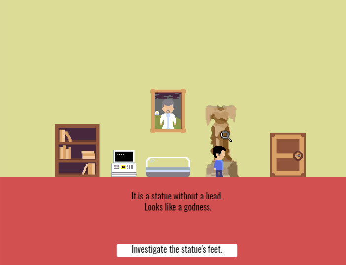

Web 像素解谜游戏 《The Garden》
这是一个网页像素风格解谜游戏，基于 P5.js 框架开发。
项目分工
单人开发。
游戏简介
在 UCLA 的游戏设计课程作业，基于 P5.js 框架开发，自己绘制了像素风格的素材，并注意到了游戏中剧情、提示、彩蛋的重要性。

这是一个网页像素风格解谜游戏，基于 P5.js 框架开发。
单人开发。
在 UCLA 的游戏设计课程作业，基于 P5.js 框架开发，自己绘制了像素风格的素材，并注意到了游戏中剧情、提示、彩蛋的重要性。